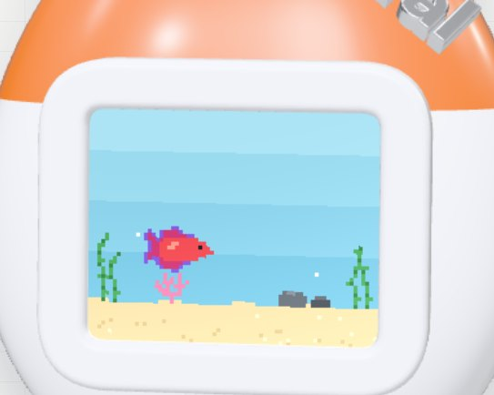
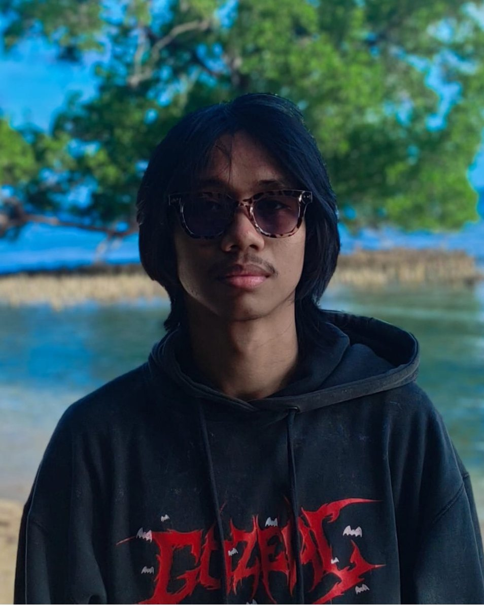
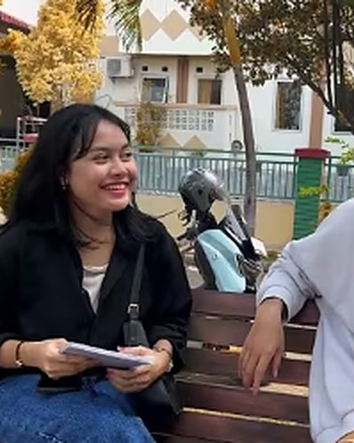
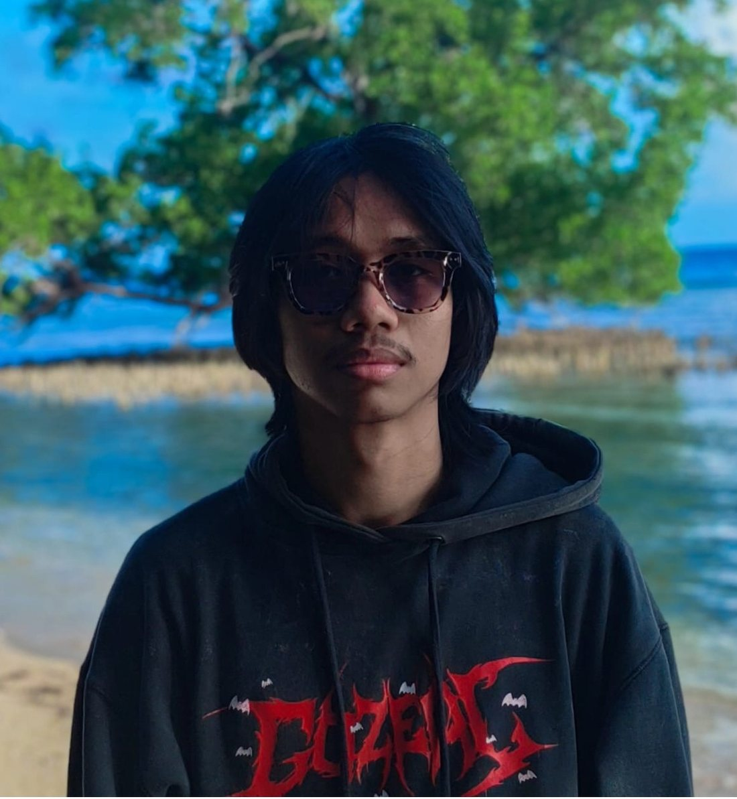

What I work with
- Video editing (CapCut & Premiere)
- Photography & documentation
- Creative design (Canva)
- Language analysis & communication
- Digital tech & gadgets
- Self-taught coding (HTML, CSS, JS)
currently: indonesian linguistics @upnvjt
Things I explore outside my linguistics classes: editing, photos, and teaching myself to code (•‿•)

// the headline of my first portfolio
const phrases = [
"Linguistik Indonesia",
"Video Editor",
"Content Creator",
"Pembelajar Otodidak",
"Tech Enthusiast",
"Storyteller Visual",
];The cat-eared toy on my home page is a little playground for code: a 3D model, a pixel cupang (betta fish), chiptune sounds, and a guessing game.
Press the pink buttons to feed the fish, play a round, or tuck it in.



I'm Mohammad Nawfal Arfa, an Indonesian Linguistics student at Universitas Pembangunan Nasional "Veteran" Jawa Timur. I'm deeply curious about where language meets digital technology, and as a self-taught learner I love exploring technical skills, from the basics of programming to multimedia production.
I'm always keen to pick up new tools that help me be more creative, especially in video editing and photography. My focus is making work that feels new, using the latest technology I can get my hands on.
teaching myself to code: HTML, CSS, and JavaScript.
editing videos in CapCut and Premiere, and taking photos.
@izzatiin_ on Instagram, based in Kota Gorontalo.
Built with care & fueled by es teh
Last updated 10/26